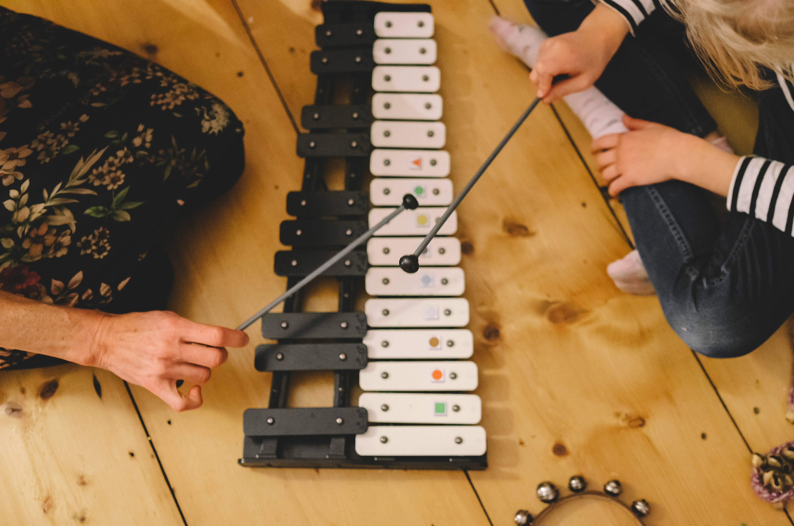
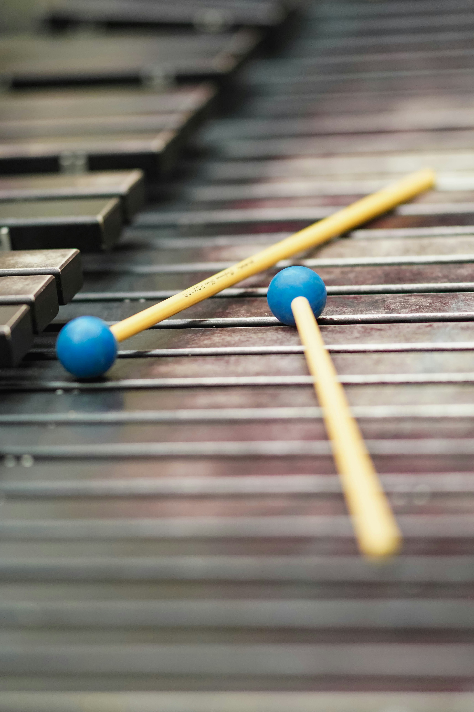

Description:
Mallet percussion refers to a group of pitched percussion instruments that are played with mallets. Common examples include the glockenspiel, xylophone, marimba, and vibraphone. These instruments have rows of bars arranged similarly to the keys of a piano, with each bar producing a different note. Mallet percussion is commonly used in concert bands, orchestras, marching ensembles, and percussion groups. The main parts usually include the bars, frame, resonators, and mallets, although the exact design differs between instruments.

How to Play Mallet Percussion:
Mallet percussion instruments are played by striking the bars with one or more mallets. Each bar produces a specific pitch, so the player moves between the bars to play melodies, scales, and chords. The type of mallet and how hard the bar is struck can change the sound. Some mallet instruments also have pedals or other features that allow the player to control how long notes ring.
